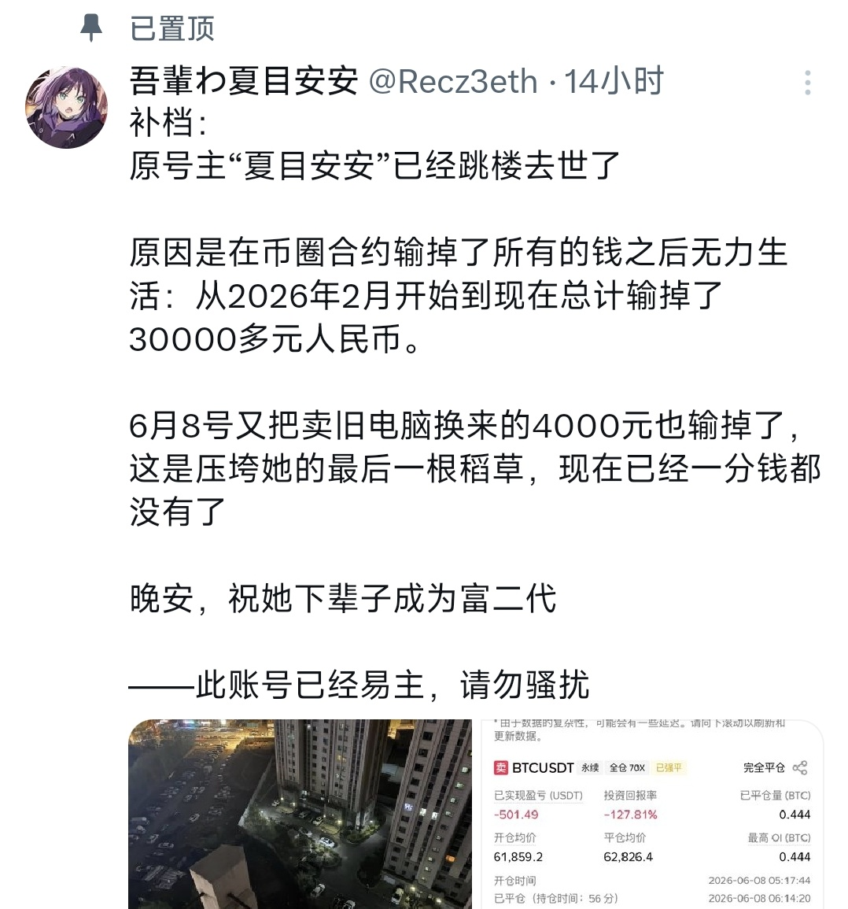

yuki
@shennaichuan_
@Rainstryin 赌狗TV

雨斯特云云☁️
@Rainstryin
情况说明:1.昨日此账号 @Recz3eth 所发的“号主跳楼去世”经确认内容不实，是“假死”（P1）号主目前正处于朋友家中。
2.我今天上午的帖子中部分内容表述夸大，现予以纠正，在此向各位致以最诚挚的歉意。（P2）
3.希望大家在用金钱给予他人帮助前，一定要慎重考虑，远离赌徒。 https://t.co/evPFh1I5TM